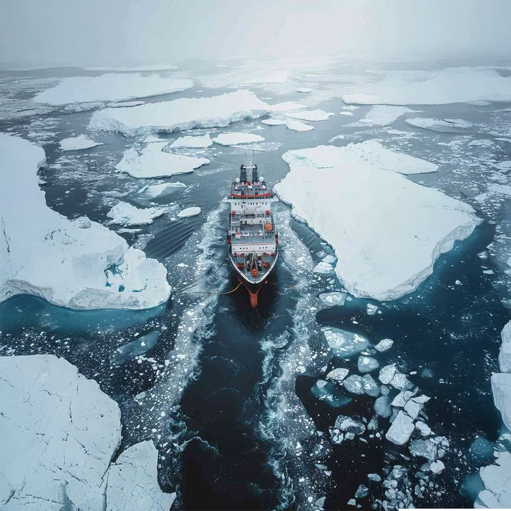
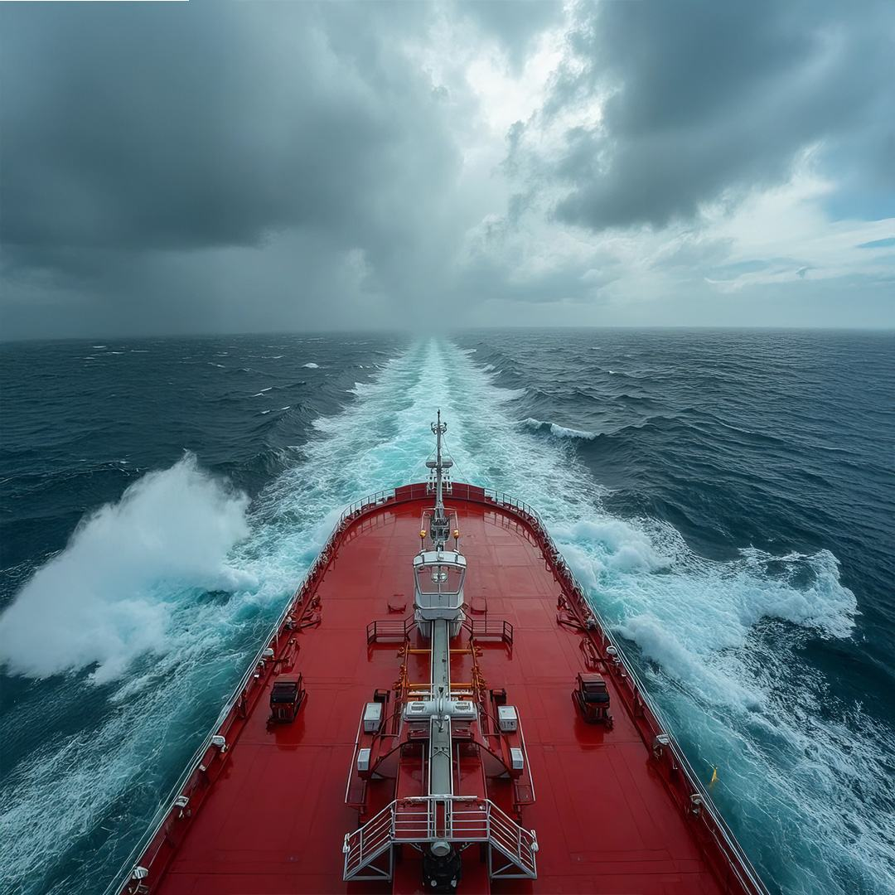
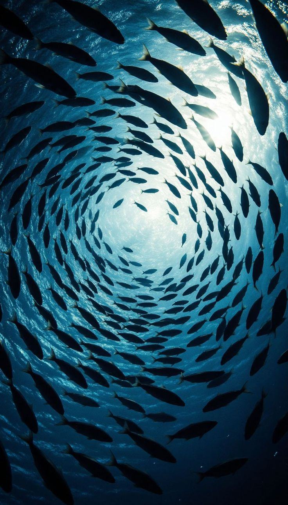
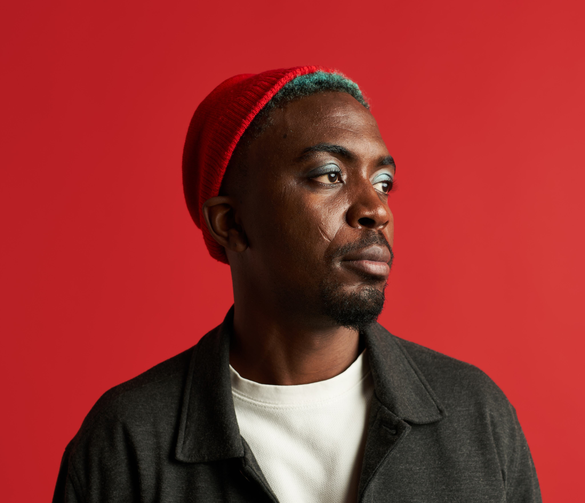

Off course
The ship may have drifted away from its primary objective.
Maximise Every Opportunity
Make your business operate more efficiently, clarify its direction, optimise your marketing and customer journey, and build a more agile business that scales and generates stronger revenue.
Assume you have a ship.
That ship is your business.
A ship made up of different sections; each section has a responsibility, each crew member has a role, and everything must work in complete harmony for the ship to move toward its destination.
But in the middle of the ocean, not everything is visible from the outside:


The ship may have drifted away from its primary objective.
It may be focused on markets, customers, or opportunities that do not generate real returns.

Leads and sales opportunities may not be properly retained or converted, causing them to slip away.
Systems, processes, brand messaging, marketing, or customer experience may need optimisation.
The team structure, roles, and responsibilities may not be properly aligned.
Or perhaps the ship is capable of much greater speed and growth, but no one has thoroughly assessed the full extent of its potential.
The presence of even one of these issues prevents a business from operating at its best.
This is where you need a structural business check-up; a thorough assessment to identify which areas require immediate improvement and which opportunities can create faster and healthier growth.
This is where I come in.
Once the core of the business is optimised and standardised, the path to scalability becomes clear.
At that point, the business is ready to build a stronger foundation and, in the future, confidently manage not just one ship, but multiple ships operating with the same level of strength and consistency.
The core value I provide is in diagnosis, navigation, and delivering a clear roadmap—the things that are often impossible to see from inside the day-to-day operations of a business.
At the same time, I also support execution, whether by working directly on key areas or by placing my specialist team alongside your business to implement the roadmap with precision.
Book a complimentary 15-minute online call to tell me about your business, your current challenges and where you want to go. If it feels like the right fit, I will explain the full process, answer your questions and outline the next steps.
Book 15 min intro callSometimes, the answer is already within the question.
When you have been steering a business for a long time, your attention is naturally divided between people, customers, operations, decisions and the constant demands of keeping everything moving. You know the business better than anyone, but being so close to it can make it harder to step back and see how all the parts are working together.
It is much like a ship that has been travelling for some time. The crew understands the vessel, the route and the conditions better than anyone. But along the journey, small signs of wear, inefficiencies or misalignment can gradually become part of the everyday environment and may no longer stand out.
An external perspective does not replace the knowledge already within the business. It brings a fresh set of eyes to it.
Someone who is not caught in the daily rhythm can step back, scan the wider system and look at how the direction, team, processes, marketing and customer journey connect. With hands-on experience across different teams, business models and industries, they may recognise patterns or opportunities that are harder to see from inside the organisation.
The purpose is not to tell experienced leaders how to run their business. It is to give them the space, perspective and clarity to assess what is working, identify what may need attention and make stronger decisions about what comes next.
I’ve spent close to 10 years working hands-on across different parts of a business, from sales, customer experience and account management to project delivery, operations, digital marketing, branding, campaign strategy, customer journeys, automation and growth.
I’ve worked directly with founders, C-level leaders and cross-functional teams across different industries, markets and business models, including start-ups, growing businesses, B2B, B2C and complex service-based organisations.
My role has rarely been limited to one department; I’ve often been the person brought in to connect the dots, understand where things are getting stuck and help teams find a more practical way forward. Over the years, I’ve tested ideas, built systems, launched campaigns, managed complex projects and seen both strong wins and failures, and both have shaped how I approach problems today.
That hands-on experience allows me to look at a business from different angles, ask the right questions and identify gaps that may not sit neatly within marketing, operations or customer experience, but still affect how the business performs and grows.

These sessions are generally designed for established businesses with a solid foundation that are looking to optimise their operations, improve performance and prepare for sustainable growth.
It can be, but the session will follow a different structure. I only accept selected start-up projects where the business idea, direction and needs are suited to this type of strategic support.
The sessions are best suited for founders, C-level executives, business owners and senior directors who are involved in shaping the direction and growth of the business.
That depends on the nature of the challenge. Some sessions work best one-to-one, while others may benefit from involving key decision-makers. We can decide on the most suitable format during the initial discovery call.